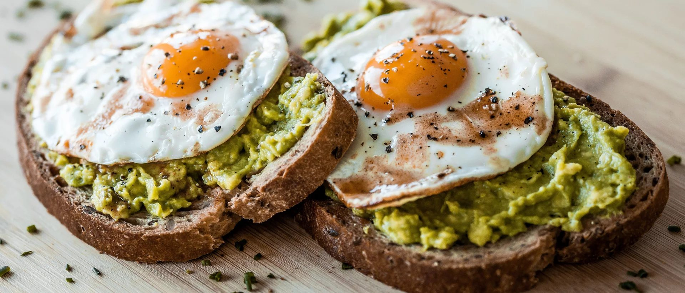
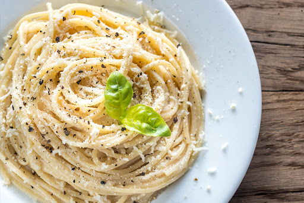

Cuando el tiempo apremia pero quieres comer rico y casero, estas recetas te salvarán. Cada una requiere solo 5 ingredientes o menos, sin sacrificar sabor ni nutrición.
🟠 Lunes - Tostadas de aguacate con huevo

Desayuno nutritivo en menos de 10 minutos
Ingredientes:
- Pan integral (2 rebanadas)
- Aguacate maduro (1 unidad)
- Huevos (2 unidades)
- Limón (½ unidad)
- Sal y pimienta al gusto
Preparación:
- Tuesta el pan hasta que quede crujiente
- Aplasta el aguacate con unas gotas de limón y sal
- Fríe o hierve los huevos al gusto
- Unta el aguacate sobre el pan y coloca los huevos encima
🟡 Martes - Pasta con ajo y queso

Comfort food clásica con pocos ingredientes
Ingredientes:
- Pasta (200g)
- Ajo (4 dientes)
- Aceite de oliva virgen extra (3 cucharadas)
- Queso parmesano rallado (50g)
- Sal y perejil fresco (opcional)
Preparación:
- Cocina la pasta al dente en agua con sal
- En una sartén, dora el ajo picado en aceite de oliva
- Escurre la pasta y mézclala con el aceite de ajo
- Añade queso rallado y mezcla bien
🔍 Tips del Chef
- Puedes sustituir ingredientes según disponibilidad
- Todas las recetas sirven 2 personas
- Los tiempos de cocción son aproximados